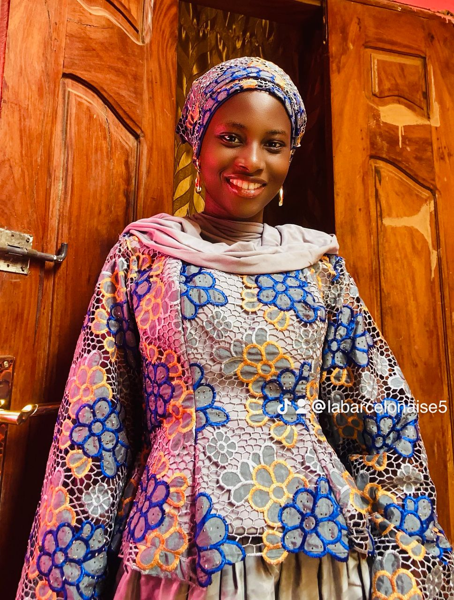

<!DOCTYPE html>
<html lang="en">

<head>

    <meta charset="UTF-8">
    <meta name="viewport" content="width=device-width, initial-scale=1.0">
    <title>  CV Penda Diallo</title>
   <link rel="stylesheet" href="forma.css">
</head>
<body>
  <div class="cv">
  <aside class="sidebar">
   
   <h1>Penda Diallo</h1>
   <div class="poste"> Etudiante en Informatique</div>
   <div class="s-title"> Contacts</div>
   <div class="contacts-item">penda.diallo3@univ-thies.sn</div>
   <div class="contacts-item">788687449</div>
   <div class="contacts-item">Pout/Thies</div>
   <div class="contacts-item">linkdin.com/in/penda-diallo-9526163b2</div>
   <div class="contacts-item">github.com/penda-git</div>
   <div class="s-title">Competences </div>
   <div class="skill-bar">
    <div class="lbl">HTML / CSS</div>
    <div class="bar-bg">
     <div class="bar-fill" style="width:90%"></div>
    </div>
  
   <div class="skill-bar">
    <div class="lbl"> Programmation C</div>
    <div class="bar-bg">
      <div class="bar-fill" style="width:60%"></div></div>
   </div>
   <div class="skill-bar">
    <div class="lbl">python</div>
    <div class="bar-bg">
      <div class="bar-fill" style="width:10%"></div></div>
   </div>
   <div class="s-title">Langues</div>
   <div class="lang-row"><span>Français</span><span>Courant</span></div>
   <div class="lang-row"><span>Anglais</span><span>Intermédiaire</span></div>
   <div class="lang-row"><span>Espagnol</span><span>Intermédiaire</span></div>
   <div class="lang-row"><span>Peulh</span><span>Natif</span></div>
   <div class="lang-row"><span>wolof</span><span>Natif</span></div>
 </aside>
 <main class="main">
  <div class="section">
    <div class="m-profil">Profil</div>
    <p class="profil-text">
      Étudiante en Licence 2 Informatique, passionnée par la cybersécurité 
      et animée d'une curiosité intellectuelle constante. Dotée d'un esprit 
      de leadership affirmé, j'ai piloté plusieurs projets en équipe avec 
      rigueur et engagement. Toujours en veille technologique, je m'intéresse 
      activement aux nouvelles tendances du numérique et de la sécurité informatique.
    </p>
  </div>
  
  <div class="m-title">Projets académiques & Personnels</div>

  <div class="exp-item">
   <div class="exp-head">
    <span class="exp-poste">Application TERRAFISC Chef de projet</span>
    <span class="exp-date">2026</span>
  </div>
  <div class="exp-entreprise">Projet Base de Données · Licence Informatique</div>
  <div class="exp-desc">Conception et développement d'une application de gestion fiscale en équipe. 
   Pilotage du groupe, répartition des tâches et coordination des livrables. Moyenne obtenue : 17/20.
  </div>
  

 <div class="exp-item">
  <div class="exp-head">
    <span class="exp-poste">Application de Gestion Hospitalière  Chef de projet</span>
    <span class="exp-date">2026</span>
  </div>
  <div class="exp-entreprise">Projet Génie Logiciel · Licence Informatique</div>
  <div class="exp-desc">Développement d'une application de gestion pour un hôpital en équipe. 
  Leadership du groupe, conception de la base de données et suivi du projet de bout en bout.</div>
 </div>

 <div class="exp-item">
  <div class="exp-head">
    <span class="exp-poste">Projets personnels en développement</span>
    <span class="exp-date">2026 Présent</span>
  </div>
    <div class="exp-entreprise">Développement personnel</div>
    <div class="exp-desc">Développement de projets personnels pour approfondir mes compétences 
    en programmation et explorer des problématiques liées à la sécurité.</div>
 </div>
 <div class="section">
  <div class="m-title">Formation</div>

  <div class="edu-item">
    <div class="edu-diplome">Licence2 en Informatique</div>
    <div class="edu-school">Universite Iba Nder Thiam de Thies</div>
    <div class="edu-date">2024-2025 2025-2026</div>
  </div>

  <div class="edu-item">
    <div class="edu-diplome">Baccalauréat Scientifique (S2)</div>
    <div class="edu-school">Lycée Wack Ngouna, Kaolack</div>
    <div class="edu-date">2024</div>
  </div>
 </div>
 <div class="section">
  <div class="m-title">Centres d'intérêt</div>
  <div class="chips">
    <span class="chip">OpenClasseroom</span>
    <span class="chip">TryHackMe</span>
    <span class="chip">Slam et Poesie</span>
    <span class="chip">Lecture</span>
    <span class="chip">art </span>
  </div>
 </div>
</main> 
</div>
</body>
</html>

   
      
    
    


    
